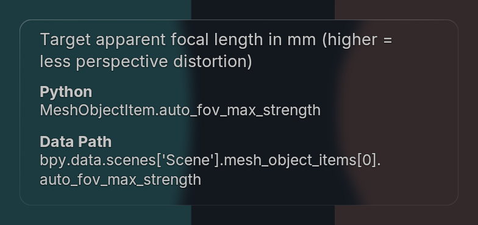

Both cards are registered to the same outer bounds. Text is larger; labels use the retained bold font. Description wrapping, section spacing and card height now follow the generated image’s measured proportions.

0% reference · 100% Blender
Generated glyphs are not a real font master: small glyph-shape/kerning differences remain. Native Inter kerning is preserved without per-character paint calls. Active Blender theme colors and real shared glass remain authoritative; this is not a claim of identical generated pixels.
| Metric | Previous | Now |
|---|---|---|
| Description font | 12 | 13.5 |
| Developer value font | 11 | 12.2 |
| Bold label font | 11 | 12.5 |
| Card height at 360 width | 174 | 152.5 |
Logical host units, 2× Blender GPU capture. No resampling or recoloring of captured image files. CSS aligns the card bounds only. Previous review · Evidence · Overview